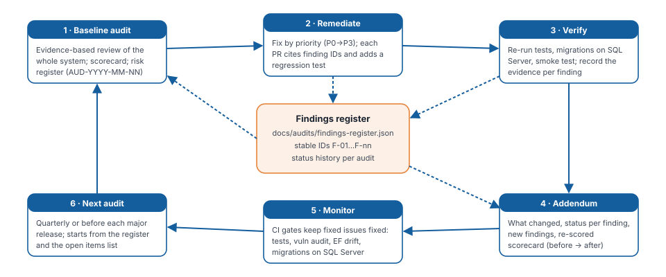

Audit Addendum — Remediation Review
AUD-2026-11-01-R1 — what was changed after the baseline audit, how each fix was verified, what was newly discovered, the re-scored scorecard, and the audit programme for future reviews.
1. Summary
The baseline audit AUD-2026-11-01 (document 08) classified the system as a functional prototype (normalised score 4.07/10). It found three Critical defects: anyone could make themselves staff, an anonymous function exposed donor certificates, and anyone could inflate funding totals without paying.
This remediation review covers the changes made on 2026-11-02 on branch feature/erd-schema-and-pdf. The application changes were committed and pushed as 921e5d8 "audit fixes". Final documentation and diagram polish was made after that commit.
Scope note. An Android project (
app/, Gradle/Kotlin) was staged in the working tree while this review was in progress. It is not covered by this review. Section 13–16 of the baseline (mobile) still reflects the repository atefa2b02. The next audit must include the mobile app.
| Measure | Baseline | Now |
|---|---|---|
| Weighted score (normalised, weights sum 105) | 4.07 | 7.03 (reported 6.5, capped while High finding F-23 is open) |
| Maturity | Functional prototype | Beta — functional, tested and secured; not yet a production candidate |
| Findings tracked | 39 at baseline | 46 (7 new found during remediation) |
| Status | — | 32 fixed · 7 partially fixed · 7 open |
Correction to the baseline. The baseline scorecard said its weights "sum to 100", but they sum to 105. Its reported overall score of about 3.9 should have been 4.07. The register stores the corrected value. The baseline document itself is kept unchanged as a frozen record.
2. What was changed
2.1 Security and access
- Registration (
Areas/Identity/Pages/Account/Register.cshtml(.cs)): the role picker was removed and every self-registration becomes a Donor. - Staff Access page (
EmployeeController.StaffAccess / GrantEmployee / RevokeEmployee,Views/Employee/StaffAccess.cshtml): employees grant or revoke staff access by email. Self-revoke is blocked, the security stamp is rotated, and every change is audited. - Bootstrap staff through
StaffAccess:BootstrapEmployeeEmails(DbSeeder). Roles are created in every environment; demo accounts are created only in Development or withSeed:DemoData. - Azure Function (
GiftOfTheGivers.Functions): function key, lookup by transaction reference, verified donations only, issuer from configuration. - Per-action roles in
DonorController: employees can open certificates; donors still own their data. - Hardening (
Program.cs,Infrastructure/SecurityHeaders.cs):- per-IP POST rate limiting, with the webhook exempt
- CSP,
X-Frame-Options,nosniff, Referrer-Policy and Permissions-Policy - SRI on the CDN stylesheet
- Data Protection keys stored in the database
- opt-in forwarded headers
- password length 8, lockout settings, unique email
IdentityEmailSenderfor Identity emails
- Dependencies:
System.Security.Cryptography.Pkcspinned to 10.0.14.- Microsoft packages aligned on 10.0.14, which also resolves
Cryptography.Xml. - Unused
NuGet.Protocoland the scaffolding package removed. NuGet.confighas package source mapping and audit sources.
2.2 Money integrity and payments
Services/DonationService.cs(new) is the only place donations are captured and payments applied:- pending capture with no change to totals
- idempotency with race handling
- active-project check
- rand conversion
- ITN application with merchant and amount checks, replay safety, a single increment, and a rowversion retry
RecalculateFundsRaisedAsync
- Currency (
Services/CurrencyConverter.cs,Currency:RatesToZar):AmountZarandExchangeRateToZarare stored per donation, and PayFast is charged in rand. - PayFast (
PayFastPaymentService,HomeController.Donate): checkout is wired, with per-donation return, cancel and notify URLs,email_address, and a 15-second timeout.PayFastOptionsValidatorrefuses unsafe live settings at startup. - Receipts by unguessable reference, with live status (
Views/Home/DonationSuccess.cshtml). - Certificates only for verified donations (
DonorController). The issuer comes fromOrganisationconfig, with a demonstration watermark (TaxCertificatePdf). Legacy routes redirect. - Offline funds and Funding Reconciliation (
ReliefProject.OfflineFundsZar,Views/Employee/FundingReconciliation.cshtml): recalculate, or accept the difference as offline funds, both audited.
2.3 Data and schema
- Migration
20261102112731_AuditRemediationNov2026:- new columns, constraints and an index
- historical backfill
- normalisation of
PaymentMethod - removal of the duplicate raw-SQL constraints
- a
Down()method that re-creates them
- Historical migration fixed:
P1PaymentsEmailAndStatusesno longer alters a rowversion column (F-21). - Orphan migration deleted; design-time factory deleted;
PendingModelChangesWarningsuppression removed; Identity key length aligned (F-22). - Volunteer
DateOfBirthandPhoneNumberare now optional and never invented. Consent timestamps were added to donations, volunteers and inquiries. Audit columns are sized and haveDetails.
2.4 Staff and public experience
- Validation:
AllowedValues/Rangerules on the donation form- validation summaries and field messages on every form
- radio and select state preserved after errors
- fieldset and legend on the donation-type radios
- a live region for the rand equivalent
- Content:
- live impact statistics (
ViewComponents/ImpactStatsViewComponent.cs) - organisation details from configuration
- fabricated statistics, phone numbers, office hours and the tax number removed
- illustrative stories labelled as such
- a real privacy notice
- consent on every form
- honest "monthly pledge" copy
- a demonstration badge in the footer
- live impact statistics (
- Staff portal:
- attention cards on the dashboard
- paged and filtered Donations (with CSV export, formula-injection safe), Volunteers, Inquiries and Audit Log
- volunteer assignments
- offline funds on project forms
- complete navigation
data-confirminstead of inline JavaScript
- Money formatting: a culture-independent
Moneyhelper replaces everyToString("C"). - Accent button contrast fixed: it measured 2.71:1 and now measures 5.77:1.
2.5 Tests, CI/CD and documentation
- Tests: 98 in total. Integration tests run through the real pipeline (
WebApplicationFactory, test auth, fake gateway) plus unit tests. The obsolete TempData test was replaced. - CI:
- locked restore, coverage, a blocking vulnerability gate and an EF drift check
- a SQL Server 2022 migrations job (empty-database apply, rollback and re-apply, idempotent script)
- CD: runs only after CI succeeds.
- Publish workflow fixed:
update source, inputs passed through env, SemVer check. - Azure Pipelines: locked restore, drift check, and a migration script artifact.
- Docker Compose: SQL Server port bound to localhost only.
- Docs:
- README, DATABASE_SETUP and CONTRIBUTING rewritten
SECURITY.mdand a PR template added- deliverables 01–08 produced as HTML and PDF from Markdown sources (
docs/tools/build_deliverables.py) - audit programme in
docs/audits/ - stale files removed:
GIT_SETUP_GUIDE.md, scratch.txtfiles, and the committedlocal.settings.json
3. Verification evidence
| Check | Command / method | Result |
|---|---|---|
| Build | dotnet build GiftOfTheGivers.slnx -c Release --no-incremental | Succeeded, 0 warnings, 0 errors |
| Tests | dotnet test GiftOfTheGivers.slnx -c Release | 98 passed, 0 failed |
| Coverage | --collect "XPlat Code Coverage", excluding migrations and compiled views | Lines 67.9% (2394/3528), branches 52.5%; DonationService, PaymentsController, DonorController, CurrencyConverter, AuditService 100% |
| Vulnerabilities | dotnet list GiftOfTheGivers.slnx package --vulnerable --include-transitive | No vulnerable packages in all 4 projects |
| Restore | dotnet restore --force-evaluate | Clean, no NU19xx warnings (private feed no longer queried) |
| Model drift | dotnet ef migrations has-pending-model-changes | No changes |
| Migrations on SQL Server | Throwaway LocalDB database: old chain → legacy rows (ZAR; USD with PayPal; EUR) → upgrade → Down → re-apply | All steps succeeded; rand backfill R 100 / R 185 / R 100; PayPal → Card; 3 duplicate constraints removed; 11 check constraints remain |
| App start on migrated DB | Development, LocalDB | Started; seeding OK; 0 errors in the log |
| Public smoke test | curl on 12 public routes | All 200; /health returned Healthy (DB check) |
| Headers | curl -I /Home/Privacy | CSP, X-Frame-Options DENY, nosniff, Referrer-Policy and Permissions-Policy present |
| Donation over HTTP | Real form post (USD 10) | 302 to sandbox.payfast.co.za with amount=185.00; stored as Pending (R 185); receipt shows Awaiting payment; project total unchanged |
| Staff smoke test | Cookie login as the demo employee; 14 staff routes | All 200; Donor dashboard correctly denied (302 to Access Denied); reconciliation flagged the legacy R 715 inflation; CSV export correct |
| PayFast sandbox | Signed requests to the public sandbox (GET/POST, with and without the documented passphrase) | Rejected: "signature does not match". Unsigned request accepted. Our signature string matches PayFast's PHP algorithm byte for byte → see F-23 |
Not verified in this review:
- GitHub and Azure DevOps pipeline runs (the definitions changed; first runs pending)
- the live Azure environment and its database
- an end-to-end PayFast payment (F-23)
- browser accessibility tooling
- load testing
4. Findings status
Generated from docs/audits/findings-register.json. Findings are sorted by severity, then ID.
| ID | Finding | Severity | Baseline ref | Status | Evidence / verification | Remaining action |
|---|---|---|---|---|---|---|
| F-01 | Anyone can self-register as Employee (staff) | Critical | R1 | Fixed | Register always assigns Donor; Employee is granted from Staff Access (audited) or StaffAccess:BootstrapEmployeeEmails. Tests: Registration_AlwaysCreatesDonor_EvenWhenEmployeeRoleIsPosted, RegisterPage_NoLongerOffersAnEmployeeOption, StaffAccess_GrantIsAuditedAndSelfRevokeIsRefused. | Review existing live accounts that self-registered as Employee and revoke where needed. |
| F-02 | Anonymous Azure Function returns any donor certificate by sequential id | Critical | R2 | Fixed | AuthorizationLevel.Function, lookup by 32-character TransactionReference, Verified donations only (GenerateTaxCertificateFunction.cs). Builds in CI. | Confirm in Azure whether an old anonymous version is deployed; redeploy or delete it. |
| F-03 | Project totals inflated by unpaid or fake donations | Critical | R3 | Fixed | DonationService.CaptureAsync never changes FundsRaised; Funding Reconciliation detects and corrects legacy inflation. Tests: Donate_RecordsPendingDonation_RedirectsToPayFast_AndDoesNotTouchProjectTotal, FundingReconciliation_RecalculateUsesOfflinePlusVerifiedOnly. LocalDB smoke test flagged a legacy R 715 difference. | Run Funding Reconciliation on the live database after deployment. |
| F-04 | Payment confirmation double-counts and failures never reverse | High | R4 | Fixed | Single increment on Verified, replay-safe, Failed never touches totals, rowversion retry. Tests: Notify_Complete_VerifiesOnceAndAddsRandAmountOnce_EvenIfReplayed, Notify_Failed_MarksDonationFailedWithoutChangingTotals. | — |
| F-05 | USD/EUR amounts summed 1:1 with rand | High | R5 | Fixed | AmountZar and ExchangeRateToZar stored at capture; all totals in rand; migration backfills history (verified on LocalDB). Test: Donate_ForeignCurrency_IsChargedInRandAtConfiguredRate. | Rates are indicative configuration; see F-46. |
| F-06 | Donation flow never sends the donor to PayFast | High | R6 | Partially fixed | Checkout wired with return/cancel/notify URLs; smoke test on LocalDB produced a correctly signed sandbox redirect for the rand amount (USD 10 → amount=185.00). | End-to-end payment not yet verified: blocked by F-23. |
| F-07 | Tax certificates issued for unpaid donations; fake registration number | High | R7 | Fixed | Certificates only for Verified donations; issuer from Organisation configuration; demonstration watermark until a PBO reference is configured. Tests: Certificates_OnlyForOwnersOfVerifiedDonations, Issuer_IsOfficialOnlyWhenNotDemoAndPboConfigured. | Configure real PBO details and set Organisation:IsDemo=false only when legally entitled. |
| F-08 | Known-vulnerable System.Security.Cryptography.Pkcs 9.0.11 | High | R8 | Fixed | Pinned 10.0.14 (first patched 10.0.13). dotnet list package --vulnerable --include-transitive reports none for all four projects. | — |
| F-09 | No privacy notice or consent for volunteer and donor personal data (POPIA) | High | R9 | Partially fixed | Privacy notice written; consent checkbox and timestamp on Donate, Volunteer and Contact. Tests: Volunteer_WithoutConsent_IsNotSaved, Contact_RecordsConsentTimestamp, PrivacyPage_IsARealNoticeNotTheTemplate. | Legal review; appoint an Information Officer; automate retention and deletion. |
| F-10 | Live site may run in Development with published staff credentials | High | R10 | Partially fixed | Demo accounts are seeded only in Development or with Seed:DemoData=true; README no longer advertises a live staff login. | Owner must confirm ASPNETCORE_ENVIRONMENT=Production on App Service and remove or rotate demo accounts there (cannot be verified from the repository). |
| F-21 | Historical migration fails on every empty SQL Server database (rowversion ALTER) | High | New | Fixed | Found while verifying migrations on LocalDB. The AlterColumn on ReliefProjects.RowVersion in P1PaymentsEmailAndStatuses was removed (SQL Server cannot alter a rowversion column). Full chain now applies to an empty database; CI migrations job guards it. | — |
| F-22 | Identity key-length drift (AddDefaultIdentity 128 vs schema 450) crashed startup once the warning was unsuppressed | High | New | Fixed | Stores.MaxLengthForKeys = 0 keeps the runtime model equal to the existing schema; app verified starting on the migrated LocalDB database. | — |
| F-23 | Shared PayFast sandbox merchant rejects every signed request; payments unverified end to end | High | New | Open | Signature string matches PayFast's documented PHP algorithm byte for byte; the sandbox answers 'signature does not match' for every variant (GET/POST, with/without the documented passphrase) but accepts unsigned requests, so the shared merchant's passphrase is unknown. | Register an own PayFast sandbox merchant, set PayFast:Passphrase, run a sandbox payment with a public NotifyUrl and record the evidence. |
| F-24 | Transitive System.Security.Cryptography.Xml advisories (three High) | High | New | Fixed | Surfaced when Data Protection storage was added; Microsoft packages aligned on 10.0.14; audit clean. | — |
| F-39 | No automated tests on critical paths | High | §32 | Fixed | 98 tests (19 at baseline) including integration tests through the real pipeline; 67.9% line / 52.5% branch coverage of hand-written code; DonationService and PaymentsController 100%. | Add Playwright and axe UI tests. |
| F-11 | Model/migration drift hidden by suppressed PendingModelChangesWarning | Medium | R11 | Fixed | Suppression removed; design-time factory removed; duplicate raw-SQL constraints dropped; orphan migration deleted; CI drift check. has-pending-model-changes reports none. | — |
| F-12 | Data Protection keys not persisted | Medium | R12 | Fixed | PersistKeysToDbContext with a DataProtectionKeys table. | — |
| F-13 | Migrations run at startup on every instance | Medium | R13 | Partially fixed | Database:MigrateOnStartup switch; idempotent migrate.sql produced by CI and Azure Pipelines. | Set Database:MigrateOnStartup=false in production and add the script step to the release. |
| F-14 | CD publishes images without CI passing | Medium | R14 | Fixed | cd.yml runs on workflow_run of a successful CI run on main, with explicit permissions. | — |
| F-15 | No rate limiting on public forms and login | Medium | R15 | Fixed | Per-IP fixed-window limiter on POST requests, webhook exempt. Test: PublicPosts_AreLimitedPerClient_ButTheWebhookIsNot. | Consider CAPTCHA if abuse is observed. |
| F-16 | Invalid input causes 500s and errors are not displayed | Medium | R16 | Fixed | AllowedValues/Range validation, validation summaries on all forms, project checked before insert. Test: Donate_InvalidInput_RedisplaysFormInsteadOfServerError (5 cases). | — |
| F-17 | No backups or disaster recovery procedure | Medium | R17 | Open | Procedure documented in deliverable 07; no restore has been tested. | Confirm the Azure SQL retention tier, perform and record a test restore. |
| F-18 | Fabricated statistics and organisation details on a public site | Medium | R18 | Fixed | Live ImpactStats view component; Organisation configuration; demonstration badge; illustrative stories labelled. Test: HomePage_ShowsLiveFiguresInsteadOfHardCodedStatistics. | — |
| F-19 | Missing security headers, Subresource Integrity and host filtering | Medium | §28 | Partially fixed | CSP, X-Frame-Options, nosniff, Referrer-Policy, Permissions-Policy; SRI on the CDN stylesheet. Test: Responses_CarrySecurityHeaders. | CSP still allows 'unsafe-inline'; set AllowedHosts per environment. |
| F-20 | PayFast ITN lacks amount/merchant checks; passphrase optional | Medium | §20 | Fixed | Amount and merchant validated; live mode refuses to start without a passphrase or with the sandbox merchant. Tests: Notify_AmountMismatch_IsRefusedAndDonationStaysPending, Notify_WrongMerchant_IsRefused, PayFastOptionsValidatorTests. | — |
| F-25 | Private Azure Artifacts feed breaks clean restore; dependency-confusion exposure | Medium | New | Fixed | NU1301 401 reproduced on restore of a new package; packageSourceMapping (only GiftOfTheGivers.Helpers from the private feed) and auditSources = nuget.org added. | — |
| F-28 | Staff changes not audited; wrong audit action names | Medium | §17 | Fixed | Audit entries with details for projects, updates, volunteer decisions and assignments, inquiries, staff access, exports, reconciliation and payment events. | — |
| F-31 | Culture-dependent money formatting | Medium | §10 | Fixed | Money helper; no ToString("C") left in views. Tests: MoneyTests. | — |
| F-32 | Volunteer date of birth fabricated when not supplied | Medium | §17 | Fixed | DateOfBirth and PhoneNumber nullable and never invented. Test: Volunteer_WithoutDateOfBirth_StoresNullInsteadOfInventingOne. | — |
| F-36 | Login lockout-on-failure not enabled by the default Identity UI; no staff MFA | Medium | §27 | Open | Lockout options configured and POST rate limiting mitigates brute force, but the default Login page does not count failures. | Scaffold the Login page with lockoutOnFailure: true; require MFA for the Employee role. |
| F-37 | Recurring donations are only a label | Medium | §5 | Partially fixed | Relabelled 'Monthly pledge' with honest copy on the form, receipt and README. | Implement PayFast subscriptions with per-payment child donations. |
| F-38 | Monitoring limited to console logs | Medium | §39 | Partially fixed | Serilog request logging; /health (database) and /health/live probes. | Application Insights or OpenTelemetry; alerts on failed ITNs and health. |
| F-46 | Exchange rates are manual configuration | Medium | New | Open | Indicative USD 18.50 and EUR 20.00 in appsettings; also used by the historical backfill. | Integrate a rates provider or a staff-maintained rate table with effective dates. |
| F-26 | Developer database contains migration 20260924223317_SnapshotSync that is not in the repository | Low | New | Open | Observed read-only in __EFMigrationsHistory of the local GiftOfTheGiversDb. | Confirm whether any shared or live database contains it; recreate local databases from repository migrations. |
| F-27 | Class-level Donor role blocked employees from certificate actions | Low | §27 | Fixed | Roles declared per action. Test: DonorPortal_ForbidsEmployeeOnlyUsersButCertificatesAllowThem. | — |
| F-29 | Azure Function references the whole web project | Low | §7 | Open | Deferred: low risk once the function is key-protected. | Extract a shared data project (implementation plan T-2.3). |
| F-30 | Unbounded staff lists (no pagination) | Low | §36 | Fixed | Server-side paging for donations, volunteers, inquiries and the audit log. | — |
| F-33 | Design-time DbContext factory hard-coded to LocalDB | Low | §40 | Fixed | Factory removed; dotnet ef builds the model from the app host and its configuration. | — |
| F-34 | Helpers publish workflow fails on duplicate source; script-injection pattern | Low | §41 | Fixed | dotnet nuget update source; inputs passed via env; SemVer validation; tests before pack. | — |
| F-35 | Committed local.settings.json, scratch files, stale and contradictory docs | Low | §6 | Fixed | local.settings.json untracked and ignored; scratch files and GIT_SETUP_GUIDE removed; README, DATABASE_SETUP and CONTRIBUTING rewritten; SECURITY.md and a PR template added. | — |
| F-40 | Certificate GET request changed state | Low | §17 | Fixed | TaxCertificateIssued is set when the payment is verified, not when a page is viewed. | — |
| F-41 | Inquiries and Audit Log unreachable from the UI; broken certificate back-links | Low | §10 | Fixed | Employee menu and dashboard links; controller-qualified back-links. | — |
| F-42 | Azure Function has no tests or deployment pipeline | Low | §41 | Open | The function builds in CI only. | Add a deployment job and tests (implementation plan T-2.3). |
| F-43 | Mixed local and UTC timestamps | Low | §17 | Fixed | UTC used for all new writes and model defaults; staff views label UTC. | — |
| F-44 | No forwarded-headers handling behind proxies | Low | §27 | Fixed | Opt-in ForwardedHeaders:Enabled configuration. | Enable ForwardedHeaders:Enabled on Linux App Service or containers. |
| F-45 | Email failure after commit returned a 500 (invites duplicate submissions) | Low | §38 | Fixed | Email delivery errors are logged, not thrown. | — |
5. New findings discovered during remediation
| ID | How it was found | Why it matters |
|---|---|---|
| F-21 | Applying the repository's migrations to an empty SQL Server database for verification | Every fresh environment (new developer, Docker, CI, disaster recovery) would crash at startup on MigrateAsync. The baseline audit did not apply migrations, so it missed this |
| F-22 | Removing the suppressed PendingModelChangesWarning made the app refuse to start | AddDefaultIdentity changes Identity key lengths at runtime, so design-time and runtime models disagreed. Earlier migrations had flip-flopped these columns, and the suppression hid it |
| F-23 | Following the PayFast redirect against the real sandbox | The checkout cannot be proven end to end with shared credentials |
| F-24 | NuGet audit after adding Data Protection storage | Fixing one advisory can introduce another; the CI gate now catches this |
| F-25 | restore failed with 401 once a new package was needed | Clean CI agents and new developers could not restore |
| F-26 | Read-only check of the local dev database before risky EF commands | A migration exists in a database but not in source control: evidence of past drift |
| F-46 | Designing currency conversion | Correct foreign totals depend on maintained rates |
6. Re-scored scorecard
Same areas, scale and weights as the baseline (weights sum to 105, normalised). Before uses the baseline score. After reflects the evidence above.
| Area | Weight | Before | After | Reason for change |
|---|---|---|---|---|
| Security | 10 | 3 | 7 | Criticals fixed, headers, rate limit, clean dependencies; CSP inline and no MFA remain |
| Authorization | 10 | 2 | 8 | Staff access controlled and audited; role matrix tested |
| Business logic | 10 | 3 | 8 | Money rules enforced in one service with tests; manual FX rates remain |
| Product completeness | 5 | 5 | 6.5 | Payments wired, reconciliation, assignments, export; recurring billing absent |
| Architecture | 5 | 6 | 7 | Service layer for donations; function coupling remains |
| Backend | 5 | 4 | 7.5 | Validation, idempotency, concurrency retries |
| Database | 5 | 7 | 8.5 | Chain applies to an empty DB, no drift, backfills, constraints |
| Automated testing | 5 | 2 | 7 | 98 tests, 67.9% coverage; no UI tests yet |
| Production readiness | 5 | 2 | 5 | Payment E2E, live environment, backups and MFA still open |
| Web frontend | 5 | 5 | 7 | Validation UX, honest states, paging |
| Maintainability | 5 | 6 | 7.5 | Smaller controllers, shared partials, documented standards |
| Authentication | 3 | 5 | 6 | Password and lockout options; Login lockout and MFA pending |
| CI/CD | 3 | 5 | 8 | Real gates and a migrations job; runs not yet observed |
| Documentation | 3 | 4 | 8 | Full deliverable set, setup docs fixed |
| Reliability | 3 | 4 | 6 | Retry strategy, DP keys, health checks, email failures contained |
| Dependency management | 3 | 6 | 8.5 | Source mapping, audit sources, aligned versions |
| UI/UX | 2 | 5 | 6.5 | Honest content and status |
| Accessibility | 2 | 5 | 6 | Fieldsets, live regions, contrast fix; untested with tools |
| Performance | 2 | 6 | 6.5 | Paging; not load tested |
| Infrastructure | 2 | 4 | 5 | Compose hardened; no IaC |
| Monitoring and logging | 2 | 3 | 4.5 | Request logs and DB health; no APM or alerts |
| Backup and recovery | 2 | 1 | 2 | Procedure documented; never tested |
| README | 2 | 6 | 8 | Accurate and complete |
| Developer experience | 2 | 6 | 8 | Migrations work everywhere; restore clean |
| Scalability | 2 | 4 | 6 | Shared keys, configurable startup migration |
| API design | 2 | 5 | 7 | Webhook contract validated; receipts by reference |
| Weighted overall | 105 | 4.07 | 7.03 | Reported 6.5 (cap: an open High finding) |
7. Remaining work before production
The smallest set of actions that moves the system to production candidate (details in 06 — Implementation Plan, Phase 1):
- T-1.1 / F-23: run a real sandbox payment with your own PayFast merchant and passphrase.
- T-1.2 / F-10, F-02: verify the live App Service (Production environment, no demo accounts, no anonymous function).
- T-1.3 / F-36: Login lockout and staff MFA.
- T-1.4 / F-17: a tested database restore.
- T-1.5 / F-38: monitoring and alerts.
- T-1.6 / F-13: migrations applied by the pipeline, not at startup.
- T-1.7 / F-09: legal sign-off of the privacy notice.
- Confirm CI on commit
921e5d8and later, including the first green run of the SQL Server migrations job, and protectmainwith those checks. - Audit the new Android app (
app/) before it ships.
All findings that are not yet fixed:
| ID | Finding | Severity | Baseline ref | Status | Evidence / verification | Remaining action |
|---|---|---|---|---|---|---|
| F-06 | Donation flow never sends the donor to PayFast | High | R6 | Partially fixed | Checkout wired with return/cancel/notify URLs; smoke test on LocalDB produced a correctly signed sandbox redirect for the rand amount (USD 10 → amount=185.00). | End-to-end payment not yet verified: blocked by F-23. |
| F-09 | No privacy notice or consent for volunteer and donor personal data (POPIA) | High | R9 | Partially fixed | Privacy notice written; consent checkbox and timestamp on Donate, Volunteer and Contact. Tests: Volunteer_WithoutConsent_IsNotSaved, Contact_RecordsConsentTimestamp, PrivacyPage_IsARealNoticeNotTheTemplate. | Legal review; appoint an Information Officer; automate retention and deletion. |
| F-10 | Live site may run in Development with published staff credentials | High | R10 | Partially fixed | Demo accounts are seeded only in Development or with Seed:DemoData=true; README no longer advertises a live staff login. | Owner must confirm ASPNETCORE_ENVIRONMENT=Production on App Service and remove or rotate demo accounts there (cannot be verified from the repository). |
| F-23 | Shared PayFast sandbox merchant rejects every signed request; payments unverified end to end | High | New | Open | Signature string matches PayFast's documented PHP algorithm byte for byte; the sandbox answers 'signature does not match' for every variant (GET/POST, with/without the documented passphrase) but accepts unsigned requests, so the shared merchant's passphrase is unknown. | Register an own PayFast sandbox merchant, set PayFast:Passphrase, run a sandbox payment with a public NotifyUrl and record the evidence. |
| F-13 | Migrations run at startup on every instance | Medium | R13 | Partially fixed | Database:MigrateOnStartup switch; idempotent migrate.sql produced by CI and Azure Pipelines. | Set Database:MigrateOnStartup=false in production and add the script step to the release. |
| F-17 | No backups or disaster recovery procedure | Medium | R17 | Open | Procedure documented in deliverable 07; no restore has been tested. | Confirm the Azure SQL retention tier, perform and record a test restore. |
| F-19 | Missing security headers, Subresource Integrity and host filtering | Medium | §28 | Partially fixed | CSP, X-Frame-Options, nosniff, Referrer-Policy, Permissions-Policy; SRI on the CDN stylesheet. Test: Responses_CarrySecurityHeaders. | CSP still allows 'unsafe-inline'; set AllowedHosts per environment. |
| F-36 | Login lockout-on-failure not enabled by the default Identity UI; no staff MFA | Medium | §27 | Open | Lockout options configured and POST rate limiting mitigates brute force, but the default Login page does not count failures. | Scaffold the Login page with lockoutOnFailure: true; require MFA for the Employee role. |
| F-37 | Recurring donations are only a label | Medium | §5 | Partially fixed | Relabelled 'Monthly pledge' with honest copy on the form, receipt and README. | Implement PayFast subscriptions with per-payment child donations. |
| F-38 | Monitoring limited to console logs | Medium | §39 | Partially fixed | Serilog request logging; /health (database) and /health/live probes. | Application Insights or OpenTelemetry; alerts on failed ITNs and health. |
| F-46 | Exchange rates are manual configuration | Medium | New | Open | Indicative USD 18.50 and EUR 20.00 in appsettings; also used by the historical backfill. | Integrate a rates provider or a staff-maintained rate table with effective dates. |
| F-26 | Developer database contains migration 20260924223317_SnapshotSync that is not in the repository | Low | New | Open | Observed read-only in __EFMigrationsHistory of the local GiftOfTheGiversDb. | Confirm whether any shared or live database contains it; recreate local databases from repository migrations. |
| F-29 | Azure Function references the whole web project | Low | §7 | Open | Deferred: low risk once the function is key-protected. | Extract a shared data project (implementation plan T-2.3). |
| F-42 | Azure Function has no tests or deployment pipeline | Low | §41 | Open | The function builds in CI only. | Add a deployment job and tests (implementation plan T-2.3). |
8. Audit vision — how future audits work

The goal is that every future audit is faster, comparable, and builds on this one:
| Principle | How it is implemented |
|---|---|
| One register, stable IDs | docs/audits/findings-register.json: IDs are never reused or renumbered; each audit appends a history entry per finding |
| Evidence-based status | Fixed requires a test, a CI gate or a recorded verification; Partially fixed means an operational step remains |
| Comparable scoring | The same 26 areas and weights (sum 105, normalised). Caps: open Critical → ≤ 4.5; open High → ≤ 6.5 |
| Regression-proof | Each Critical/High fix has a test or CI gate (role matrix, money tests, vuln gate, drift check, SQL Server migrations) |
| Reproducible reports | Markdown sources plus python docs/tools/build_deliverables.py produce identical HTML and PDF |
| Trend visibility | docs/audits/AUDIT-HISTORY.md tracks score, maturity, open counts, tests, coverage and vulnerabilities per audit |
Cadence
| Trigger | Audit type |
|---|---|
| Before the first production release (M1) | Full audit AUD-2027-xx using the master brief, starting from the open register items |
| Quarterly | Remediation review (-R2, -R3…) of open and partial findings + CI evidence |
| After any security incident, new payment feature, or schema overhaul | Targeted audit of the affected areas |
Score trend
| Audit | Weighted | Reported | Maturity | Critical open | Tests | Coverage | Vulnerable packages |
|---|---|---|---|---|---|---|---|
| AUD-2026-11-01 (baseline) | 4.07 | 3.9 | Functional prototype | 3 | 19 | not measured | 1 |
| AUD-2026-11-01-R1 (this review) | 7.03 | 6.5 | Beta | 0 | 98 | 67.9% | 0 |
| Next (target, M1) | ≥ 8.0 | — | Production candidate | 0 | + UI tests | ≥ 70% | 0 |
Running the next audit
python docs/tools/findings.py openlists the starting point.- Run the verification commands in section 3 and record the results.
- Append the audit to the register (
audits[]) and a history entry for each finding re-checked; add new findings with the next free ID. - Copy this addendum's source as
src/08-…-addendum-R2.md(or write a new full audit for a baseline), then runpython docs/tools/build_deliverables.py. - Add a row to
docs/audits/AUDIT-HISTORY.md.